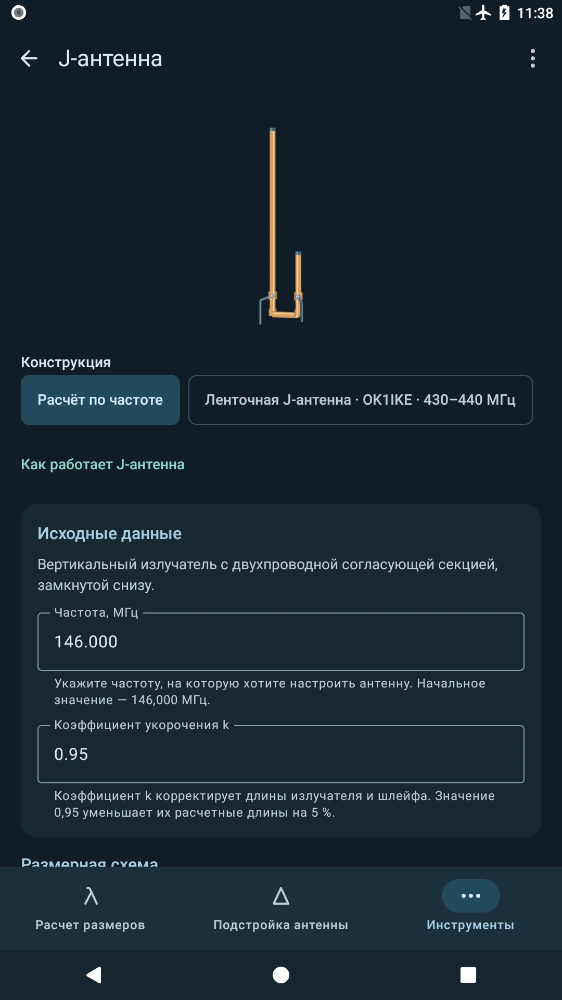
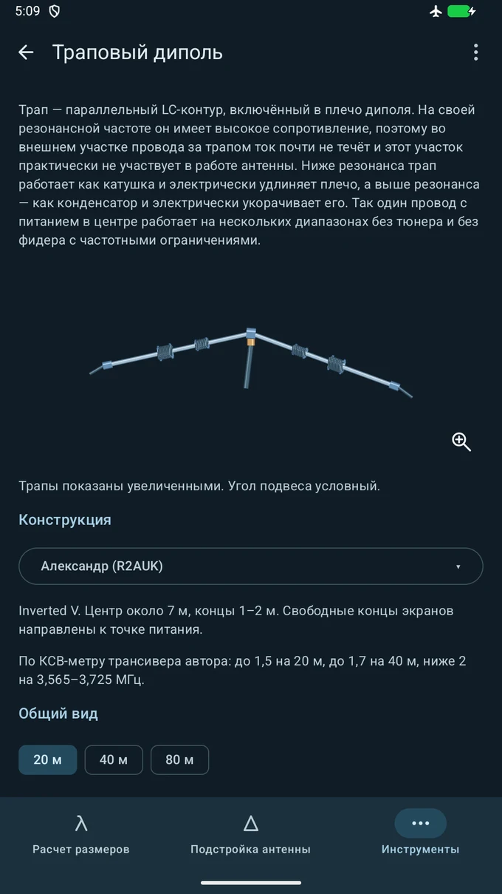
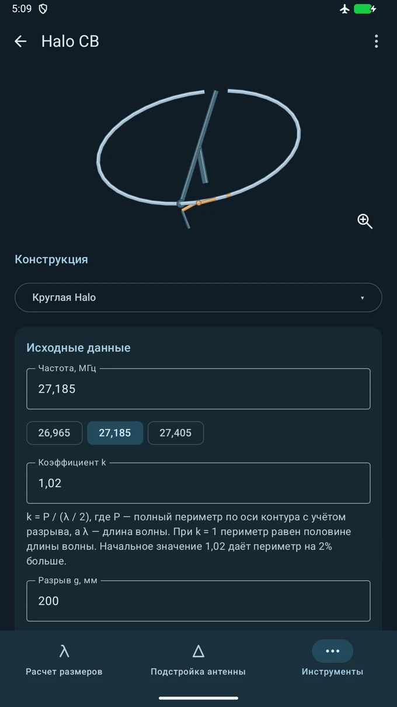
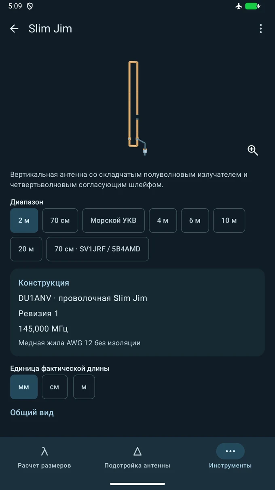
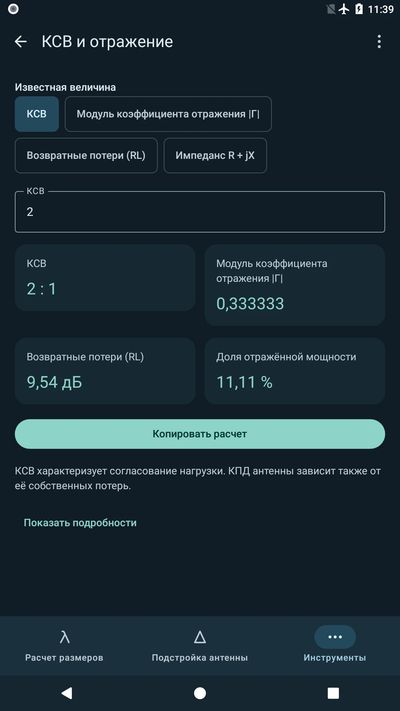
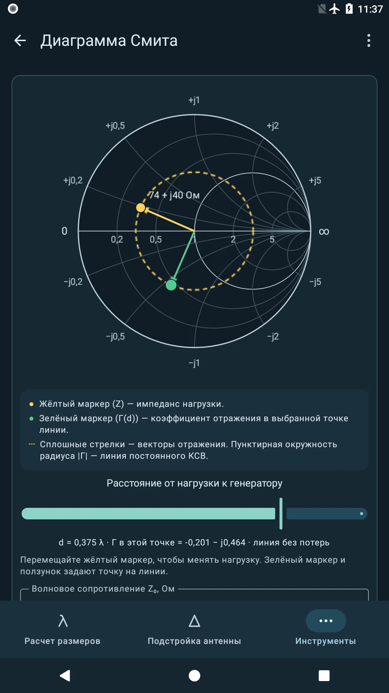
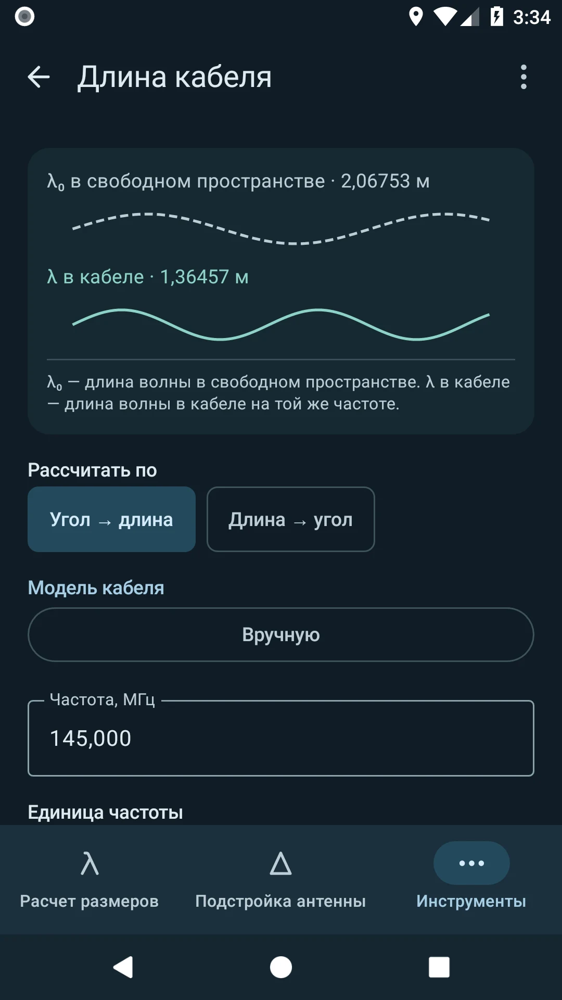
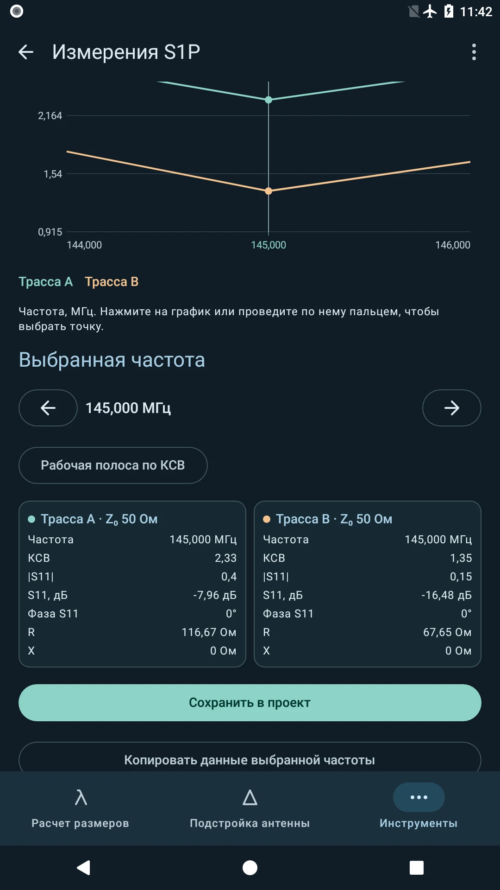
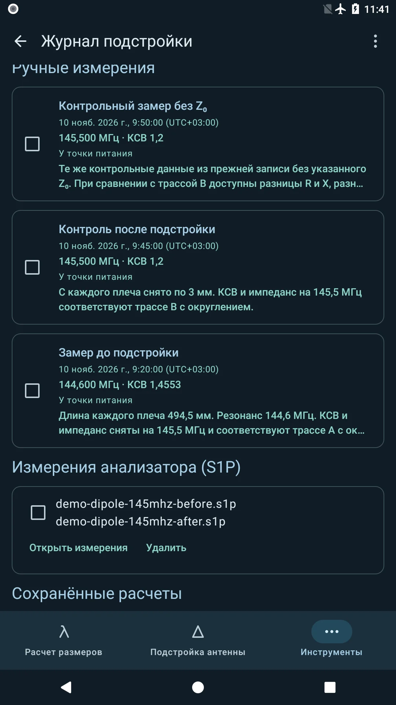

Первые шаги
AntCalc помогает рассчитать начальные размеры, подстроить собранную антенну и сохранить результаты измерений. Приложение работает на Android 8.0 и новее. Расчёты, модели и встроенные материалы доступны без интернета.
- Скачайте
antcalc.apkиз нужного выпуска GitHub Direct и откройте файл на телефоне. Для обновления используйте сборку с совместимой подписью. - В меню ⋮ откройте Настройки. Выберите язык интерфейса и системную, светлую или тёмную тему.
- Внизу экрана выберите Расчет размеров, Подстройка антенны или Инструменты. Чтобы вернуться к началу длинного экрана, нажмите на его заголовок.
Расчёт размеров и подстройка
Начальные размеры
- Откройте Расчет размеров и укажите частоту в выбранных единицах. Например, для диполя на 145,5 МГц введите 145,5 при выбранных МГц.
- В результатах найдите длину штыря или диполя. Для симметричного диполя проверьте отдельно полную длину и длину одного плеча.
- Если нужен запас на подстройку, заложите его при раскрое. Сохраните расчёт в проект через кнопку копирования.
Подстройка по резонансу
- Откройте Подстройка антенны и выберите штырь или симметричный диполь.
- Введите целевую и измеренную резонансную частоты, затем фактическую длину. Для диполя указывайте суммарную длину обоих плеч.
- Если измеренный резонанс ниже цели, приложение предложит укоротить антенну. Если выше, предложит удлинить. Для симметричного диполя меняйте оба плеча равномерно.
- Вносите небольшие изменения и измеряйте заново в том же положении антенны и при той же плоскости калибровки.
Введите резонанс, определённый по измерению. Если в рабочем окне несколько минимумов КСВ, сопоставьте их с графиком реактивности и выберите нужный режим антенны.


Калькуляторы антенн
Откройте Инструменты → Расчет параметров антенн. Выберите конструкцию или расчётный режим. Читайте единицы в таблице и обозначения на схеме перед раскроем. Если экран даёт ведомость заготовок, сверяйте её с габаритами готовых деталей.
Если результат пуст, проверьте единицы и допустимый диапазон полей.
| Калькулятор | Что сделать |
|---|---|
| Инвертированная V и Ground PlaneИнвертированная VGround Plane | Введите частоту и параметры конструкции. Сверьте длины плеч либо штыря и противовесов с выбранной конфигурацией. |
| Полноволновая рамкаПолноволновая рамкаQuad LoopDelta Loop | Выберите Quad или Delta Loop. Рассчитайте периметр и стороны по частоте либо частоту по известному периметру. Выберите расположение точки питания на схеме. |
| J-антенна и Slim JimJ-антеннаSlim Jim | Выберите вариант или диапазон. Сверьте размеры секций, зазор и точку питания с обозначениями на схеме. Подгонку начинайте с опубликованных размеров своего варианта. |
| Яги — УдаЯги — Уда | Выберите профиль автора и монтажный вариант. Сверьте позиции от рефлектора, диаметры, заготовки и длину траверсы. Для таблиц с фиксированным монтажом соблюдайте заданные отступы и способ крепления. |
| Антенна МоксонАнтенна Моксон | Выберите опубликованный профиль или расчёт по частоте и диаметру проводника. Для разметки возьмите размеры и зазоры выбранной конфигурации. |
| Антенна HB9CVАнтенна HB9CV | Выберите опубликованную конструкцию или расчёт по частоте в диапазоне 100–1500 МГц. Проверьте фазовую линию и поля размеров, зависящих от монтажа. |
| Баночная антенна (Cantenna)Баночная антенна (Cantenna) | Задайте частоту или полосу, подберите диаметр и сравните заготовки. Сверьте положение зонда и допустимую полосу. Для раструба воспользуйтесь развёрткой. |
| Halo CBHalo CB | Выберите круглый или квадратный контур, задайте частоту, коэффициент k и разрыв. Проверьте длину проводника по схеме и параметры гамма-согласования. |
| Траповый дипольТраповый диполь | Выберите профиль R2AUK, VK2EVB или AA4LR и диапазон 20, 40 или 80 м. Сверьте секции A, B, C и трапы T20, T40. Для отдельного расчёта используйте поля LC и катушки. |
Масштабирование Яги — Уда
В «Инструментах» выберите, что изменить. При переносе частоты меняются длины, диаметры и позиции. При смене диаметра на той же частоте пересчитываются длины прямых круглых элементов. Укажите исходную частоту антенны и общий диаметр перед целевыми параметрами. В панели «Геометрия элементов» введите длину и положение от отражателя для каждого элемента, а при необходимости задайте индивидуальные диаметры. Проверьте таблицу «Было → Стало». Разверните схему и коснитесь элемента, чтобы сравнить его размеры. Расчёт можно добавить в проект Яги.
Просмотр моделей и чертежей
Проведите пальцем по векторной модели, чтобы повернуть её. Двойное касание или лупа с плюсом открывает полный экран. Разведите пальцы для увеличения, переместите модель двумя пальцами. Лупа с минусом и системная кнопка «Назад» закрывают просмотр. В руководстве двойное касание или лупа также открывают фотографии и чертежи. Их можно масштабировать, перемещать и возвращать к исходному масштабу.
Траповый диполь
Откройте панель Конструкции и работа по диапазонам внизу экрана, чтобы прочитать справку о W3DZZ и работе на разных диапазонах. В панели Настройка по измерениям можно открыть S1P и анализировать КСВ в окне выбранного диапазона.












Конструирование волнового канала
Откройте Инструменты → Конструирование антенн → Волновой канал Яги — Уда. Руководство описывает четырёхэлементную антенну R3UDK на 145 МГц с разборным креплением и траверсой из ПВХ.
- Разверните Схема и размеры. Позиции отсчитываются от рефлектора. Для вибратора учитывайте габарит готовой детали и размер заготовки до гибки.
- В разделе материалов откройте иллюстрации креплений и при необходимости сохраните встроенный ZIP с файлами STL. Затем прочитайте шаги подготовки креплений, элементов, фидера и сборки.
- Для изменения припуска или отступов нажмите Открыть калькулятор R3UDK. Он открывает профиль этой конструкции.
- Чтобы сохранить исходную конструкцию, прокрутите руководство до конца и нажмите Добавить в проект. Можно выбрать существующий проект Яги или создать новый с целевой частотой 145 МГц. Из руководства сохраняются опубликованные размеры без дополнительного припуска и пользовательских отступов.
- После сборки проверьте КСВ и импеданс в рабочем положении. В разделе проверки можно перейти к импорту S1P.


КСВ и отражение
- Откройте Инструменты → КСВ и отражение и выберите известную величину. Доступны КСВ, модуль коэффициента отражения |Γ|, возвратные потери и комплексный импеданс R + jX.
- При расчёте по импедансу задайте опорное сопротивление. Для большинства 50-омных измерений это 50 Ом.
- Сверьте пересчитанные величины. При КСВ 2:1 отражается около 11,11% падающей мощности. Потери рассогласования в плоскости нагрузки составляют около 0,51 дБ при неизменной падающей мощности. Передатчик может снизить её дополнительно.


Диаграмма Смита
- Откройте Инструменты → Диаграмма Смита и задайте импеданс нагрузки и опорное сопротивление.
- Перемещайте маркер нагрузки, чтобы увидеть изменения импеданса, КСВ и коэффициента отражения.
- Меняйте расстояние от нагрузки к генератору, чтобы проследить трансформацию импеданса вдоль линии. Используйте подписи под диаграммой для чтения маркеров.


Кабель и потери в фидере
Электрическая длина кабеля
Откройте одноимённый инструмент. Задайте частоту, коэффициент укорочения кабеля и известную длину. Выберите направление пересчёта между физической и электрической длиной. Фаза и задержка относятся к введённым параметрам линии.
Потери в фидере
Укажите частоту, длину и тип кабеля из каталога. При ручном вводе берите затухание для указанной частоты и проверяйте единицы, например дБ/100 м. Результат показывает потери в согласованной линии и мощность на дальнем конце. Для оценки отражения откройте «КСВ и отражение». При смене частоты прежнее затухание остаётся в предварительном расчёте. Сверьте его и подтвердите для новой частоты перед копированием. Если для рабочей частоты в паспорте нет значения, P₂ и шкала показывают результат на ближайшей опубликованной частоте. Она подписана рядом с результатом. Можно выбрать эту частоту кнопкой или ввести затухание для рабочей частоты вручную.



Измерения VNA и полоса по КСВ
- Экспортируйте измерение S11 из анализатора в однопортовый файл Touchstone
.s1p. - Откройте Инструменты → Дополнительные инструменты → Импорт измерений VNA анализатора и нажмите Открыть файл S1P.
- Укажите плоскость калибровки, например у точки питания или со стороны трансивера. Чтобы сравнить замеры, добавьте вторую трассу и проверьте частотное перекрытие, опорное сопротивление и плоскость калибровки.
- Просмотрите КСВ, импеданс и диаграмму Смита. На графике КСВ найдите минимум, а по реактивности проверьте, где она близка к нулю. Эти частоты могут различаться.
- В инструменте Рабочая полоса по КСВ выберите трассу и порог, например 2,0. Граница на краю прохода означает, что для определения полной полосы нужно расширить измерение.
- Чтобы сохранить трассы с расчётом или замером, нажмите Сохранить в проект.
Если файл S1P не открывается, проверьте, что анализатор экспортировал однопортовый файл Touchstone с расширением .s1p.


Проекты и журнал подстройки
Поиск и порядок проектов
На экране Проекты введите часть названия, частоты или типа антенны в поле под кнопками. Список отфильтруется, а совпадения в карточках будут выделены жёлтым. Для частоты можно использовать запятую или точку.
Удерживайте карточку и перетащите её вверх или вниз. Соседние карточки плавно раздвигаются и показывают место вставки. Когда вы отпустите карточку, приложение сохранит порядок. При активном поиске скрытые карточки сохраняют свои места.
Чтобы скопировать отдельное значение, формулу или фрагмент заметки, удерживайте текст, передвиньте маркеры выделения и нажмите «Копировать». Для полного отчёта используйте кнопку копирования под результатами.
Сохранение расчёта
- Нажмите Копировать в проект в калькуляторе. В руководстве по Яги кнопка называется Добавить в проект.
- Выберите подходящий проект и нажмите Сохранить в выбранный проект или выберите Создать новый проект и введите название.
Откройте сохранённый расчёт в журнале проекта. Исходные данные расчета и Результаты расчета показаны в двух таблицах. Подписи находятся слева, значения — справа.
Замеры и перенос данных
- Откройте Инструменты → Проекты и журналы подстройки, выберите проект и добавьте запись. Укажите условия установки, внесите результаты замера и добавьте фото с комментарием, если это нужно для повторения опыта.
- В Сравнить записи выберите две записи. Сопоставляйте КСВ и импеданс при одинаковых условиях и точке подключения.
- Для переноса проекта используйте Экспорт JSON и Импорт JSON. При импорте создаётся отдельный проект. Для передачи фото используйте экспорт фото в ZIP.



Справка и обновления
- Справка в меню содержит сведения о приложении. Материалы и источники ведут к статьям и формулам, а Лицензии перечисляют условия использования и источники конструкций.
- Откройте Руководство пользователя из меню приложения, чтобы читать его офлайн и переходить к описанным здесь инструментам. Текст и скриншоты соответствуют языку и теме приложения.
- В сборке GitHub Direct выберите Проверить обновления. При наличии новой версии приложение показывает её и предлагает системную установку.